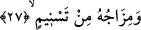

karıştırılmış olduğu için o kokuyu duyacaktır. Tıpkı dünyada iken içine misk kokusu
karıştırılmış içeceklerin içilmesinde olduğu gibi. Çünkü böyle bir içeceği içen kimse ilk
yudumu aldığında değil de en son yudumunu aldığında misk kokusunu duyar.
Ebu’d-Derda (r.a.)’ın ifâdesine göre yirmi beşinci âyette yer alan “rahîk”, gümüş gibi
beyaz renkli şarabın adıdır. Ebrardan olanlar, içecekleri Cennet şarabını en son bu
rahîktan bir yudum almak sûretiyle tamamlarlar. Bu rahîk o kadar nefistir ki dünya
halkından herhangi biri elini buna batırıp da sonra çekse dünyada ne kadar canlı varsa
onların tümü bu hoş kokuyu hisseder.
“İmrenenler ona imrensinler.” Yani imrenen kimseler özellikle bu rahîk denen
içeceğe imrensinler. Yoksa hemen çabucak fani olan ve insanı mutsuzluğa sevkeden
nimetlere değil. Ya da imrenenler Kur’an’ın tâbiriyle şimal ehli olanların hâline değil,
burada durumları zikredilen kimselerin durumuna imrensinler. Bir başka ifâdeyle;
isteyen kimseler Allah’a itâat etmeye koyulmak sûretiyle onların bu hâline ermeyi
istesinler.
Âyetteki emir zâhirî bir teşvik içindir. Ya da bâtınen îman ve itâatın vâcipliğini ifâde
etmek içindir.
“İmrensinler” şeklinde tercüme ettiğimiz fiilin kökü; “tenafüs”tür. Bu kökün aslı;
insanın nefis/güzel olan; arzu duyduğu bir şeye atılması demektir. Şöyle tasavvur
edelim; herhangi bir şey üzerinde onu elde etmek için “tenafüs” varsa, bunu
gerçekleştiren iki şahıstan herbiri onu kendine edinmekte yarışıyor demektir. Bu kökün
aslı ise “nefs”ti. Nefis de güzel olan şeyi değerli bullduğu için kendine almak ister.
Bağavi der ki; bu kelimenin aslı, bütün herkesin aşırı istekle üzerine saldırdığı ve
herkesin kendi nefsi için istediği nefis şeydir.
Müfredat’ta ifâde edildiğine göre âyetteki fiilden türeme “el-munâfese”, nefsin
faziletli insanlara benzemek ve onlara yetişmek, onların safında olmak için –hiç
kimseye zarar vermeksizin- çaba harcaması demektir.
Zünnun Mısri şöyle der: Tenafüsün var olup olmadığının alâmeti, kalbin o nesneye
bağlanması, vicdanın ona doğru uçar gibi yönelmesi, hatıra geldiğinde harekete
geçmesidir. Hattâ, insanlardan uzaklaşma ve yalnız kalma isteği, daha önce yapılan
günahlara ağlama, zikir duymadan tat alma, Rahman’ın kelamı üzerinde derinden derine
düşünme, gelen nimetleri sevinç ve şükürle karşılama ve Allah’a münacaata
yönelmedir.
27. Karışımı Tesnîm’dendir.
Bu cümle “hitamuhu/onun sonu” kelimesinin üzerine atfedilmiş ve “rahîk”ın diğer
sıfatıdır. Bu ikisi arasındaki geçen cümleler ise mu’teriza cümlesi olup içilecek içkinin